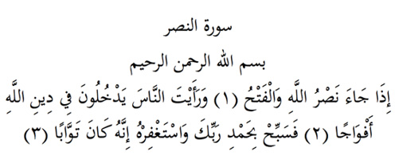

10

Nasr/Zafer Suresi
Anlamı: Er-Rahman, er-Rahîm Allah’ın adıyla
Allah’ın desteğinin gelip fethin nasip olduğunu (1) ve insanların bölük bölük Allah’ın dinine girdiklerini gördüğün zaman (2) hamd ederek Rabbini tespih et ve ondan af dile. Çünkü o tövbeyi çok kabul eder (3).
Bu Sure Allah Rasulü’nün Huneyn Gazasından dönüşünde indirilmiştir.
Açıklama: «Allah’ın desteği ve fetih» geneldir, ama bu surede-kinden özel olarak Mekke’nin fethini anlamışlardır. Çünkü insanlar bu fethin, yani Mekke’nin fethinin ardından bölük bölük İslam’a girmişlerdir.
Tespih etme, Allah’ın yüceliğini tanıma ve onu eksik nitelemelerden arındırma demektir. Kul bu anlamı düşünerek subhanellah deyince Allah’ ı tespih etmiş olur. Hamd, her nimetin ve her güzelliğin Allah’tah olduğunu kabul edip, onu takdir ve ona teşekkür etme demektir. Kul, elhamdü-lillah deyince bunu söylemiş olur.
Hz. Ebubekir bu sureden büyük zaferin yakın olduğuna göre, Hz. Peygamberin görevinin de biteceği ve bu dünyadan ayrılacağı anlamını çıkarmış ve ağlamıştı. Gerçekten de iki yıl sonra Hz. Muhammed vefat etti. O halde bundan şöyle bir anlam da çıkar: Demek ki, Allah vefatına yakın onun daha çok tespih ve hamd etmesini istemiştir. (Zad). Nitekim Allah Rasulü bu sure geldikten sonra şu cümlelerle Allah’a sıkça tespih, ham ve istiğfar edermiş:
«Sübhanellahi ve-bihamdihi, esteğfirullahe ve etûbu ileyh». (Allah’ ı tespih ve ona hamdederim, ondan mağfiret diler ve ona tövbe ederim).